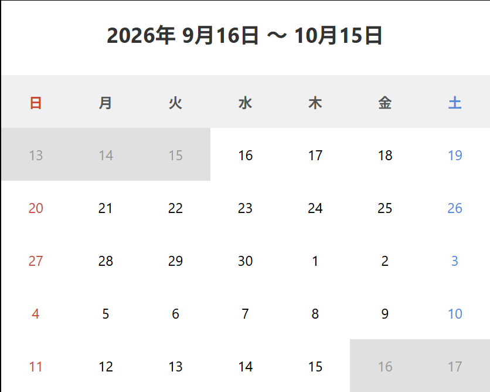
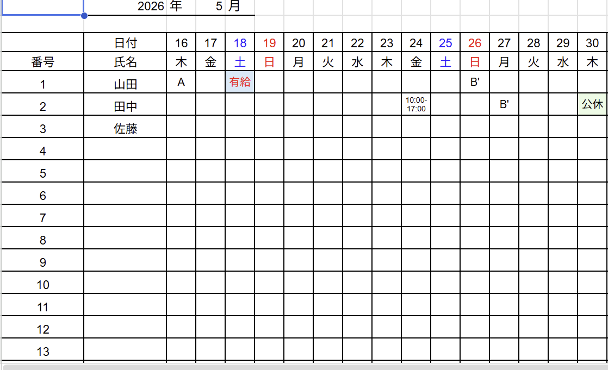

WORK 01
シフト希望管理アプリ
WEB APPLICATION

OVERVIEW
保育園のアナログなシフト提出を
いつでもどこでも簡単に行うための
Webアプリケーション
学校の課外活動として毎月のシフト希望収集をWeb上で利用できるようにすることを目的として
制作したシステムです。
出勤希望、休暇希望、欠勤など保育園独自の提出ルールに沿った機能を一つのシステムに
まとめました。
利用者が迷わず操作できることを意識し、
シンプルで分かりやすい画面構成を設計しました。
INFORMATION
PERIOD
2025.08 - 2026.07
TEAM
9 MEMBERS
ROLE
UI Design / Frontend
TYPE
Web Application
PROCESS
01
Planning
現在の図書利用における課題を整理し、 必要な機能や利用者を明確にしました。
02
Design
利用者が迷わず操作できるよう、 画面構成や情報の配置を設計しました。
03
Development
フロントエンドとデータベースを実装し、 実際の利用を想定したシステムを構築しました。
POINT 01

カレンダーから
直接選択
出勤・休暇・欠勤したい日をカレンダーから
選択できるよう設計しました。
どんな人でも直感的に操作ができるように
シンプルなカレンダー形式で日付を選択できるようにしています。
POINT 02
一目でわかることを
意識した設計
全職員のシフト希望を一覧化し、シフト作成者が管理しやすい形に設計しました。
保育園固有のシフト提出ルールに即した仕様で、今までのルールとの差異を最小限にしました。

TECHNOLOGY
LEARNING
制作を通して
実際にシステムを設計する中で、開発者目線ではなく、利用者が操作しやすい設計や 見やすい画面を作ることの重要性を学びました。
今後について
すでに後輩に開発を引き継ぎ、直接かかわることはなくなりましたが、 自分たちが開発したシステムであることを忘れず、後輩たちが疑問に思った ことなどがあれば積極的にアドバイスしていきたいと考えています。